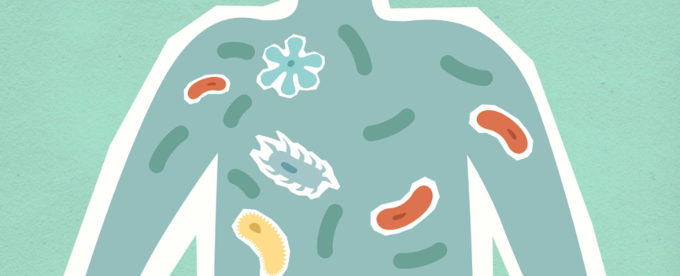

Aspartame and Gut Health
What recent studies say about sweeteners and the microbiome.
How Aspartame Interacts with Your Gut
Research into artificial sweeteners shows they can modify the balance of gut microbes. Some studies note shifts in species linked with glucose intolerance after consuming aspartame.(1)
The gut microbiome helps break down food and supports immune function. When the balance of bacteria changes, digestive discomfort and metabolic issues can occur. While more research is needed, limiting high amounts of sweeteners may help preserve a healthy microbiome.
Tips for a Healthy Microbiome
- Eat Fermented Foods: Yogurt, sauerkraut and kimchi provide beneficial bacteria.
- Increase Fiber Intake: Fiber from fruits and vegetables feeds good bacteria.
- Moderate Sweetener Use: If you choose diet products, balance them with whole foods.
Conclusion
Maintaining a diverse gut microbiome is vital for overall wellbeing. Current evidence suggests that large amounts of artificial sweeteners could upset this balance, so enjoying them in moderation is wise.
By focusing on fiber-rich foods and fermented products, you can support beneficial bacteria and keep digestion running smoothly.
References
- Cell Journal. "Artificial Sweeteners and Microbiome Shifts." Cell (2023)
- Food and Drug Administration (FDA). "Additional Information about High-Intensity Sweeteners." FDA Website
- Gut Health Journal. "Probiotics and Their Impact on Detoxification." Gut Health Journal (2024)